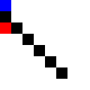

What could we do if, instead of coding programs from the ground up, we could just specify the rules for a task, the success criteria, and make AI learn to complete it?
Imagine the blessings humanity could unlock if we could automate all the tasks nobody wants to do, all the unsafe, unhealthy or uninspiring jobs. Or the ways Scientific progress could be sped up if big parts of the research process were accelerated.
That powerful question motivates Reinforcement Learning. Instead of programs that classify data or attempt to solve narrow tasks (like next-token prediction), Reinforcement Learning is concerned with creating agents, autonomous programs that run in an environment and execute tasks.
The algorithms that train a Reinforcement Learning agent are very hands-off compared to other branches of Machine Learning: just provide the agent with features describing the environment (like the graphics for a game, or other users’ recent posts for social media content), and give it rewards according to its actions.
Following the algorithms, the agent will work to maximize total reward over time, like a dog that’s given treats until it learns to do a cartwheel.
This may not always work. At each time step (however we define our time steps), the agent will have to pick one of all possible actions, which can potentially form a huge universe of possibilities. There could also be delays between the time the action is chosen and when we learn if it was a good choice, or the environment could be hard or expensive to simulate –imagine simulating trades in the stock market, or Robotics tasks that deal with expensive equipment.
Moreover, Reinforcement Learning algorithms are data-hungry: it took years of playing time for Alpha Zero to learn to play go at human level, but when it did it surpassed our greatest players. In terms of data efficiency, RL ranks lowest among the Machine Learning family.
However, just the fact that it is already possible to train an AI to beat all humans in most intellectual games, begs the question of what the next generation of Reinforcement Learning models will be able to do once they incorporate Large Language Models and Vision Models for feature extraction.
For my speculations on that and a few interesting recent results, keep posted for the conclusions.
How Reinforcement Learning Works
The current paradigm of Reinforcement Learning looks like this.
We have an agent, which takes actions in an environment it does not control directly. Time is discretized into timesteps, either naturally (if the environment is a turn-based game, for instance) or artificially (by using sampling rates, like observing 30 frames per second).
At each timestep, the agent will choose an action according to a decision process we call a policy, and that action will make the environment change state. The agent is given rewards every time it takes an action, which can be positive or negative, typically real numbers.
In this article and most of the literature, we model the environment as a Markov Discrete Process: this means all past history is ignored, or assumed to be contained in the current state. Imagine a chessboard: if I gave you one with all the pieces set in a certain position, which move is optimal would not depend on in which order the pieces arrived at their current places. You only care about the current state, not past states. This memory loss property characterizes Markov Processes, which is where MDPs take their name from.
Tasks can be episodic or continuing, where episodic tasks have a beginning and an end, like playing chess matches, and continuing ones are ongoing (like managing a business).
The whole training process will be centered around modifying the agent’s policy.
If we can make it choose actions better in each situation, it will perform better at the given task. To achieve this, we will have a value function that assigns an expected value to each state, or state-pair action. If we know what state each action leads to, and how much reward we should expect from a given state, then the best policy will be the one that always picks the actions that lead to the highest rewards over time.
The state (or state-action) value is defined as the expected total reward from a given state (or state-action). That is, if we start on this state, and keep following the current policy, what will be the sum of all our rewards, averaged over many repetitions? This takes into account the possible non-determinism of the environment, where taking the same action in the same state may not always lead to the same next state, or yield the same fixed reward.
Choosing the best policy, then, will be about estimating as correctly as possible what the value of each state and action is, and then always choosing the state with the highest value -what we call following a greedy policy-.
There are still further considerations we might look into, which I will skip in this article, like whether the environment itself can change behavior over time (imagine finding the optimal move in poker, but then all the other players realize you always make the same bluff and start not buying into it) or how to deal with the expected reward in a continuing task (if it was just the sum, it would diverge, so we normally use exponential discounting).
If you want to learn Reinforcement Learning in more detail, I recommend you read Introduction to Reinforcement Learning by Richard Sutton -the book is free-, of which I wrote a book summary here.
Sarsa and Tabular Methods
For this article, we are going to focus on tabular methods for Reinforcement Learning.
In tabular methods, the environment is modeled as a set of discrete states, where each possible state is assigned a unique identifier. If we go back to our chess example, each state would be a possible piece arrangement in the board. Depending on how we define things, we could include or exclude arrangements which are not really attainable in-game, like one player having 17 pieces, or 10 queens.
As the name implies, our value function will be very straightforward: a lookup table that maps each possible state into a (real numbered) value.
Remember that a state’s value is the expected sum of all subsequent rewards. Alternatively, we can add a discounting factor (a number between 0 and 1) that multiplies each subsequent term in the sum, to give more weight to short-term rewards and avoid divergence of the sum. This is called exponential discounting, as we will estimate the value of transitioning to a state as the reward from that transition, plus the discounted (multiplied by this factor) value of the next state, which was estimated by taking into account the discounted value of the next one, and so on.
Thus, when the agent is standing in a certain state, it will pick the action that makes it transition into the highest-valued state next, or the one that maximizes expected next-state value if transitions are non-deterministic. As an example, imagine you can either take action A, to go to a state of value 5, or action B where you flip a coin and land on either one of two states with values 10 and -5. In this case taking action A would be better in terms of maximizing value, so an optimal policy would pick A every time.
Thus emerge the Bellman equations, which predict the value of each state given the values of all other states under a defined policy.

If we can make the Bellman equations converge for a system, then we’ve solved our Reinforcement Learning problem. The good news is, these converge if we use iterative linear equation solvers like Gauss-Seidel. The bad news is, for most interesting problems the state-space is so big, we can’t just plug the matrix into a linear solver and call it a day, as it would take ages for it to converge.
Instead, we resort to focusing our estimations into the values of states we tread on more often, like the first turns of a game, or the most likely moves an opponent would make. We will update a state’s value as often as we land on it, thus naturally prioritizing the most likely states.
In this context, Temporal-Difference (TD) methods emerge.
TD methods update their value estimates based in part on other value estimates, a practice called bootstrapping. Instead of running a whole episode and then updating all value estimates by taking them closer to the sum of the discounted rewards, they take each action based on the policy, and then immediately update the previous state’s value using the newly obtained information.
Thus in Sarsa, the TD method we will use in this article, on each time step after taking an action the estimate for the action’s value on the current state will be nudged towards the sum of
- The obtained reward, plus
- The discounted value of the next state-action we will encounter if we keep following the policy.
In math terms, with γ the discount factor, Q(s,a) the value function for taking action a in state s, and r the reward at time t, our update rule will be:
In this case, α corresponds to the update size/learning rate, similar to the one used in neural networks, normally a value between 0 and 1 that determines how much the current instance influences the value estimation (usually, we initialize it to a higher value and make it closer to zero over time).
Note that the bigger γ is, the more we will care about subsequent rewards (as estimated by the value for the next state-action pair). If γ was 0, then we would only estimate the value as the expected reward (and not take the long-term into account), whereas if γ is 1, then there is no incentive to rush: any reward, no matter how delayed, is as valuable as that which we could have obtained now.
In that case, if for instance we have a bird fetching a grape, it would have no incentive to fly in a straight line instead of going in lots of circles, as delaying the grape would not change the state value. If instead we add discounting, suddenly it is more valuable to grab the grape sooner rather than later. Nonetheless in many episodic tasks, γ is kept at 1 and the reward is only given at the end of the task if successfully completed, for instance when winning a game of chess -since no intermediate steps are certain to lead to victory-.
Note also that this algorithm does not require any explicit estimation of the transition probabilities between states: we never need to estimate how likely it was that taking action a in state s led to state s’, which could be intractable (like in card games with lots of possibilities) or outright impossible (in environments based in Physics, for instance). Instead, we just sample the next state over and over, and trust that the law of great numbers will lead us to eventual convergence.
I hope by now you have an intuition of how Tabular Methods work. Now I will show you how we can implement them from scratch in Python, so you too can teach your computer to play games.
Maze Solver: A Python Sarsa Implementation
For this article I wanted to build something fun. So, I made this: a Sarsa-based algorithm that receives an arbitrary labyrinth and finds a solution.
To do this, I implemented the maze as a separate class. It only knows which actions can be taken on each state, what reward to give for each one, how big the maze is and what its shape is. It also knows where the player starts from and where it needs to go, and allows for transitions. Finally, it can make a player’s trip into a cute gif so I can share with you guys.
The reward scheme is very simple: The maze hands out a reward of 100 if the maze is solved, -1 if the agent tries to bump into an internal maze wall, and 0 otherwise.
As for Sarsa, I coded it from scratch so it:
- Stores each state-action’s value in a dictionary (where the lookup is first by state, then by action).
- Follows an ε-greedy policy (epsilon greedy), which means the agent chooses the best value action with probability 1-ε, or a random one with probability ε. However, I made it so it couldn’t choose to bump into an external boundary -so it can’t try to go off-limits-, though that behavior could have been learned.
To initiate learning, a loop starts that runs through N episodes of the labyrinth, with the player always starting in the same position and needing to get to the same place, avoiding the walls of the maze. After each action is taken, the previous state-action’s value is updated in the map (as Sarsa learns online), and the agent always picks its action using the ε-greedy policy.
After a number of episodes, ε is reduced to 0, so the agent can fine-tune the optimal policy. I made it so a gif is made in the first and last episodes, so we can see the difference between an agent that moves at random (luckily, even a random agent will reach the exit eventually, as diffusion is divergent, a property that even proteins exploit in cells) and one that knows where it is going.
Here are the relevant snippets, but you can also check the GitHub Project for the full code.
The lookup table:
The policy:
The main loop (minus the prints and after cleaning). I used an α value of 0.5, and a γ of 0.9.
I polished them a bit compared with the ones on GitHub, for clarity’s sake.
I ran the code for multiple mazes, and was happy to see all of the results were positive.
Here is our agent solving a very simple maze: a wall running across the middle. The agent is the blue square, the goal -an apple- is the red one.
Before training:
After training:
For a more advanced challenge, I tried a hockey-stick shape, where it needs to go through a narrow passage. It actually took it less time to learn this pattern, I guess because it was more constrained in the possible movements it could make.
Before training:
After training:
It performed similarly with a cross, even though in this case it had to back-pedal a bit.
Before training:
After training:
Then I tried making it go through narrow passages, one way and the other. This one took a long time for the random agent to crack.
Before training:
After training:
And finally, just to see it could learn anything: what if it had to go through a wall that divided the whole map in half, and then follow it closely back in the other direction?
Before training: 
After training:
In conclusion, this maze solver is a-mazing!
As next steps, I think it could be fun to add moving enemies, like in Super Mario, and the agent needs to avoid them (or it is sent back to square one), or maybe add more than one goal but they need to be fetched in a certain order. At any rate, I think this example has been enough to showcase Reinforcement Learning’s capabilities, and it should be very easy to edit the Maze class in the GitHub project to add different mini games.
Feel free to do it and, if you do, make a Pull Request. You’ll get credit and a link from me. I just want to see if anyone designs anything fun.
Conclusions
We showed that Sarsa, and Temporal Difference methods in general, can solve complex problems like an arbitrary labyrinth. As long as we have enough time to train it, and a big enough memory, we could even solve problems where the state space is huge, like chess, using this same approach (and it has been done).
For more complex problems, or ones where partial knowledge of the state suffices, state representation can be reutilized and we could aim for Approximate Learning, doing away with discrete methods as in Policy Gradient (where the state is mapped into a vector, not necessarily bijectively).
I may write a follow-up showing how to use a convolutional neural network with Policy Gradient for this problem (plus moving obstacles or fog of war) if you guys are interested.
One personal conclusion I arrived to is that bugs are a big headache. I spent about 2 hours fighting with the code because all the value estimates converged to the right values, but the agent was still moving in a very suboptimal way, until I discovered the policy code was correctly assessing the best action, and then choosing at random every time anyway, which was obviously a bug. I had misnamed a variable. Systematically debugging the code proved the best solution.
Having added a test for every function in the Maze class was also liberating, as each new change could easily be verified to not break existing features.
I know these conclusions are not Machine Learning oriented, but I guess my biggest challenges with this project were more design- than algorithms- heavy.
As for speculation: I think one area that has been researched lately and has a lot of promise is the combination of Genetic Algorithms, Language Models that code, and Reinforcement Learning. In a recent OpenAI paper (my notes), a pipeline was used where:
- There was a task that could be solved with code, trying to optimize a transparent metric.
- Multiple code solutions were taken, mutated with text modifying operators based on GPT-3 and, if they still worked, tested to see how far they went. The best candidates were kept and mutated repeatedly until very good candidates were found (with a loss that also encouraged diversity of niches).
- The new candidates generated through these genetic algorithms were used to train a new autoregressive language model, which now could create plausible candidates.
- That last model was trained through Reinforcement Learning to make new candidates conditioned on novel environments not seen by the previous models, and rewarded with that same metric.
Now in this particular paper, the task was sodaracing, a videogame where a simple Physics engine is used to create robots that move as far as possible in the X axis. But imagine applying this to other things: automatically A/B testing the design of a blog, the layout of products in different branches of supermarkets to increase volume sold, or even military applications. Let alone making the jump from sodaracing to real world robots.
I think the capabilities Reinforcement Learning is about to unlock are enormous, and not enough attention is being put into this field. Additionally, Richard Sutton’s team recently released a new long-term strategy for AI with a focus on Reinforcement Learning, which proposes a roadmap towards AGI -human-level general AI-. I am not sure how far we are from that, but I think it deserves a big chunk of our attention.
What other big things do you think could be automated by RL and how soon do you think they will impact the market? Let me know.
If you liked this post, consider reading my summary of Introduction to Reinforcement Learning, and if you prefer to see more Python code or Optimization discussion, see my post on Ant Colony Optimization.
Related Articles
From the wiki:
- Introduction to Reinforcement Learning (book notes) for a thorough review of the subject as I learned it.
- A quick intro and roadmap in Reinforcement Learning.
- My article on Proximal Policy Optimization if you are looking for something more advanced. It covers a recent paper by OpenAI describing the current state of the art (as of 2022).
If this post was useful or interesting, please share it on social media.